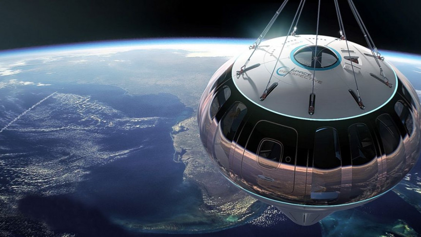

Space technology is technology developed by space science or the aerospace
industry for use in spaceflight, satellites, or space exploration. Space
technology includes spacecraft, satellites, space stations, and support
infrastructure, equipment, and procedures and space warfare.
Will space travel ever be possible?
The truth is that interstellar travel and exploration is technically
possible. There's no law of physics that outright forbids it. But that
doesn't necessarily make it easy, and it certainly doesn't mean we'll
achieve it in our lifetimes, let alone this century. Interstellar space
travel is a real pain in the neck.
Space tourists will soon have
another option at their disposal, if all goes according to plan. The new
company Space Perspective aims to send paying customers and research
payloads to the stratosphere aboard Spaceship Neptune, a balloon-borne
pressurized capsule that's scheduled to make its first test flights early
next year. "We’re committed to fundamentally changing the way people have
access to space — both to perform much-needed research to benefit life on
Earth and to affect how we view and connect with our planet," Space
Perspective founder and co-CEO Jane Poynter said in a statement today
(June 18), when the company announced its plans. "Today, it is more
crucial than ever to see Earth as a planet, a spaceship for all humanity
and our global biosphere," Poynter said, referencing the "overview effect"
commonly cited by astronauts who have flown to space.

The Spaceship Neptune capsule can accommodate a pilot and eight
passengers, who will ride in style. The craft will feature seats, a bar, a
bathroom and huge windows that will allow for great views of Earth against
the blackness of space, company representatives said. The craft will
launch from the old Shuttle Landing Facility at NASA's Kennedy Space
Center (KSC) on Florida's Space Coast. Spaceship Neptune will head east
out over the Atlantic Ocean on winter flights and west over the Gulf of
Mexico during the summer, a seasonal shift dictated by the prevailing
winds. Spaceship Neptune will spend about two hours getting up to a
maximum altitude of about 100,000 feet (30,000 meters), pulled gently
upward by a 650-foot-tall (200 m) balloon filled with buoyant hydrogen.
"Helium has become quite difficult to obtain," Space Perspective founder
and co-CEO Taber MacCallum said during a news conference today, explaining
the choice of lift gas. "It's used for a lot of medical practices and for
launching rockets." The capsule will spend about two hours high in the
stratosphere, above 99% of Earth's atmosphere, then will spend another two
hours coming back down again for a total flight time of six hours.
Spaceship Neptune will be fished out of the sea by a recovery boat, much
like SpaceX Crew Dragon capsules are today. The Spaceship Neptune capsule
will be reused, but a new balloon will be needed for each mission. Space
Perspective has not yet set a price for this balloon experience, but a
ticket will likely sell for around $125,000 initially, MacCallum and
Poynter said. That's about half the most recent stated price for a ride
aboard Virgin Galactic's suborbital SpaceShipTwo space plane, which is
expected to begin commercial operations soon. (Jeff Bezos' spaceflight
company, Blue Origin, is also developing a suborbital space tourism
vehicle, called New Shepard, which could get and running soon as well).more details
The 20 Biggest Space Missions of the Next Decade